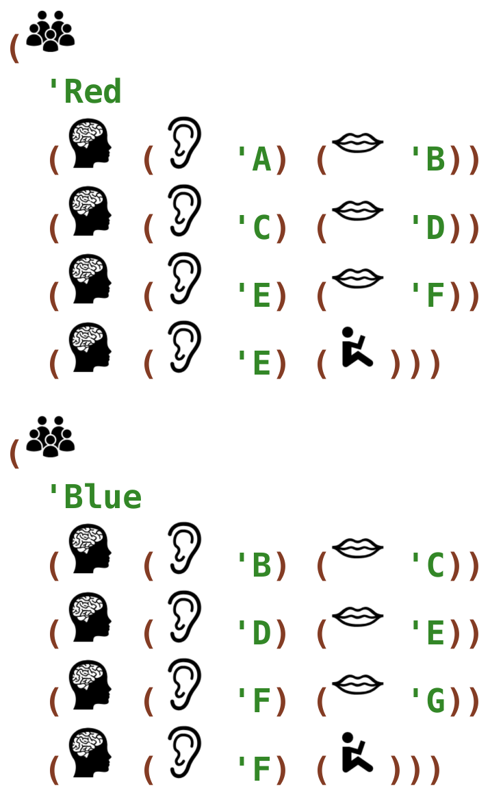
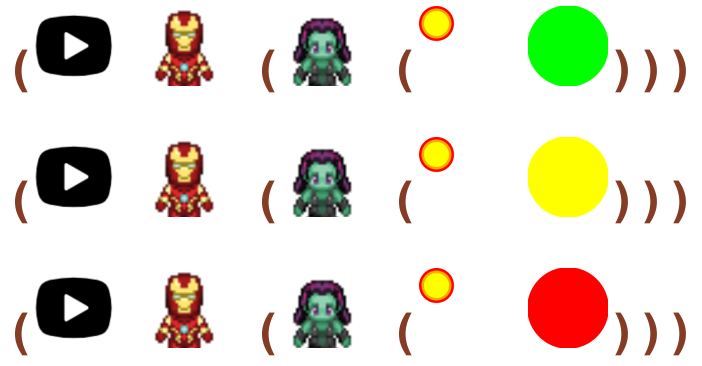
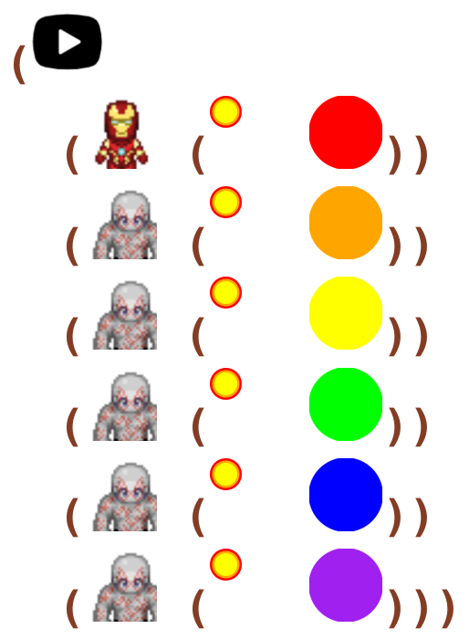

9 Session Nine
9.1 Intro Kata
read
#lang k2/lang/classroom/basic (assign 'Red (whenever (hear 'A) (say 'A)) (whenever (hear 'B) (sit)) (whenever (hear 'C) (stand))) (assign 'Blue (whenever (hear 'D) (step 1)) (whenever (hear 'E) (say 'B)) (whenever (hear 'F) (sign 'A)))
In Ratchet:

do
The social game above as a class until everyone can play accurately and efficiently. As with all games, the teacher may adjust the rules at any time to customize the game for their class.
9.2 Intro Kata
read
#lang k2/lang/classroom/basic (assign 'Red (whenever (hear 'A) (say 'B)) (whenever (hear 'C) (say 'D)) (whenever (hear 'E) (say 'F)) (whenever (hear 'E) (sit))) (assign 'Blue (whenever (hear 'B) (say 'C)) (whenever (hear 'D) (say 'E)) (whenever (hear 'F) (say 'G)) (whenever (hear 'F) (sit)))
In Ratchet:

do
The social game above as a class until everyone can play accurately and efficiently. As with all games, the teacher may adjust the rules at any time to customize the game for their class.
9.3 Hero Kata
read
Write code to make a a game with three levels. In all levels, the hero is Ironman and the enemy is Gamora. But make Gamora have a different colored magic orb power in each level.
code
#lang k2/lang/hero/powers (start ironman (gamora (magic-orb green))) (start ironman (gamora (magic-orb yellow))) (start ironman (gamora (magic-orb red)))
In Ratchet:

9.4 Hero Kata
read
Write code to make a game where Ironman is the hero, and the enemies are two Draxes and two Blackwidows. Give the hero a Hammer power, give each Drax a Magic Orb power, and give each Blackwidow a Hammer power.
code
#lang k2/lang/hero/powers (start (ironman hammer) (drax magic-orb) (drax magic-orb) (blackwidow hammer) (blackwidow hammer))
In Ratchet:

9.5 Hero Kata
read
Write code to make a a game where Ironman is the hero, and there are five other Drax enemies. Give everyone a Magic Orb power, each with a different color.
code
#lang k2/lang/hero/powers (start (ironman (magic-orb red)) (drax (magic-orb orange)) (drax (magic-orb yellow)) (drax (magic-orb green)) (drax (magic-orb blue)) (drax (magic-orb purple)))
In Ratchet:
